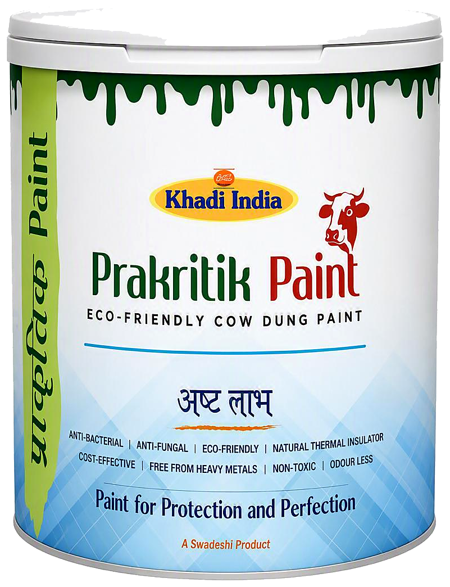
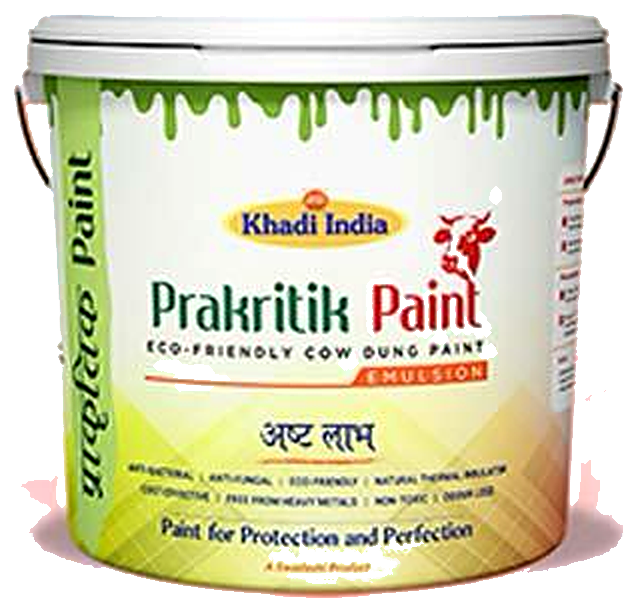
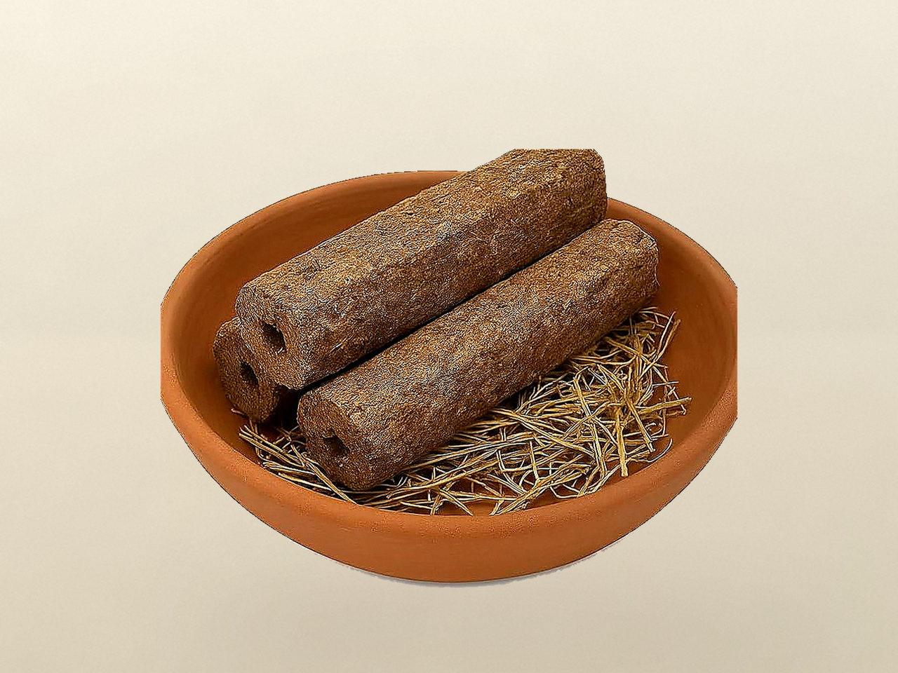
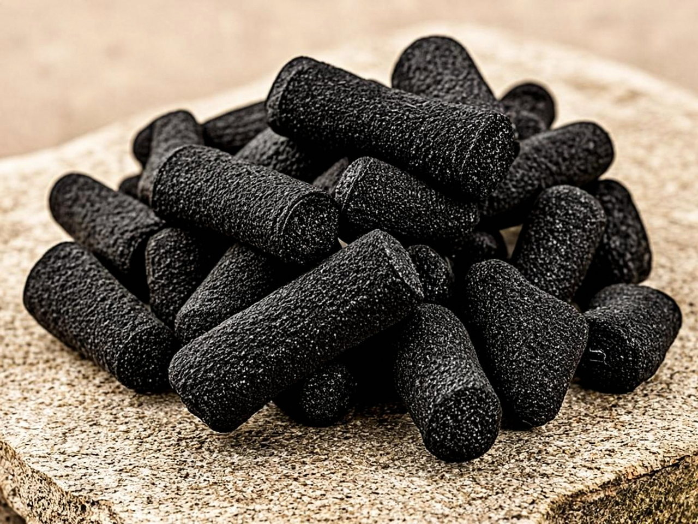
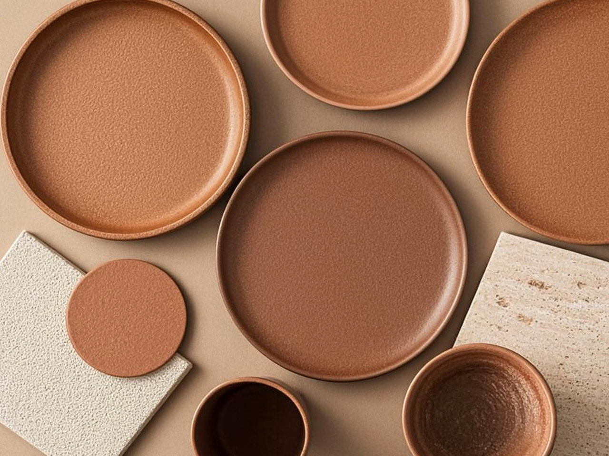

One natural resource. Multiple useful applications.
Cow dung is the shared material beginning. Gaurikrit develops it in four directions — Eco-Paints is the documented family; GoCast Logs, Bio-Coal Logs and Utility Products are development directions.

Eco-Paints
Healthy walls inspired by nature.
Cow dung-based wall coatings in Distemper and Emulsion formats — the most developed family in the Gaurikrit ecosystem, documented with full product specifications.

Prakritik Distemper Paint
Eco-Friendly Cow Dung Paint. A paint listed for interior and exterior walls. Supplied in 1, 5, 10 & 20 kg packs.
- Finish
- Matt
- Drying time
- 4 hrs
- Coverage
- 200 sq.ft.**
- V.O.C.
- Negligible

Prakritik Emulsion Paint
Eco-Friendly Cow Dung Paint. A paint listed for interior and exterior walls. Supplied in 1, 4, 10 & 20 litre packs.
- Finish
- Matt
- Drying time
- 4 hrs
- Coverage
- 300 sq.ft.**
- V.O.C.
- Negligible
Compare the two formats.
Coverage note Actual coverage may vary from mentioned coverage due to factors such as method, condition of application surface, roughness and porosity.
Two shade collections, inspired by nature.
12 Signature shades and a Premium collection in five groups — names and codes exactly as supplied on the client shade card, previewed live on the wall.

GoCast Logs
A cow-dung log direction.
A dense log format shaped from cow dung — a development direction exploring material uses where wood has traditionally been used.
- Natural material format
- Traditional-use direction
- Resource-conscious direction
GoCast is a development direction — the photographs show client-supplied log material, not a documented product specification. Dimensions, composition and availability will be published when the client supplies verified information.
Bio-Coal Logs
A bio-based fuel material direction.
Biomass-based fuel logs — a development direction exploring how natural material streams could serve fuel applications.
- Bio-based fuel material
- Biomass applications
- Fuel-material direction
- Circular material use
Bio-Coal is a development direction. Composition, calorific value and test data will be published when the client supplies verified information.

Eco-Friendly Utility Products
A natural-material utility direction.
Practical daily-use products from naturally derived materials — a development direction for homes, gardens and everyday routines.
- Natural-material utility direction
- Moulded material forms
- Home / garden / lifestyle direction
- Circular-economy direction
Utility Products is a development direction. A confirmed product list will be published when the client supplies verified information.

Where the Ecosystem Works.
Buildings & Construction
- Eco-Paints Family
- Protective Coatings Direction
- Decorative Finishes Direction
Energy & Fuel
- Bio-Coal Logs Direction
- Biomass Fuel Solutions Direction
Traditional & Ritual Applications
- GoCast Logs Direction
- Eco Cremation Solutions Direction
Everyday Sustainable Living
- Utility Products Direction
- Home & Garden Products Direction
- Eco Lifestyle Solutions Direction
Entries marked Direction are application areas under exploration — not products currently for sale.
Need help choosing? Talk to Gaurikrit.
We can walk through your project — interior or exterior, fresh walls or repainting — and help you pick the right Prakritik format.